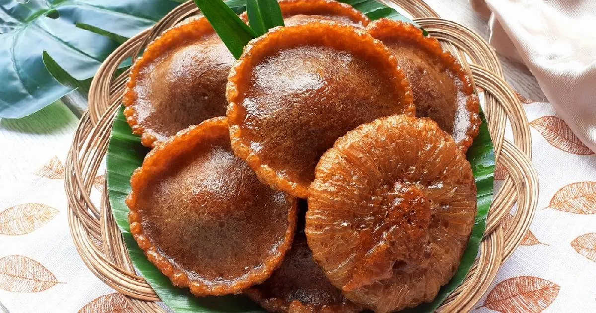
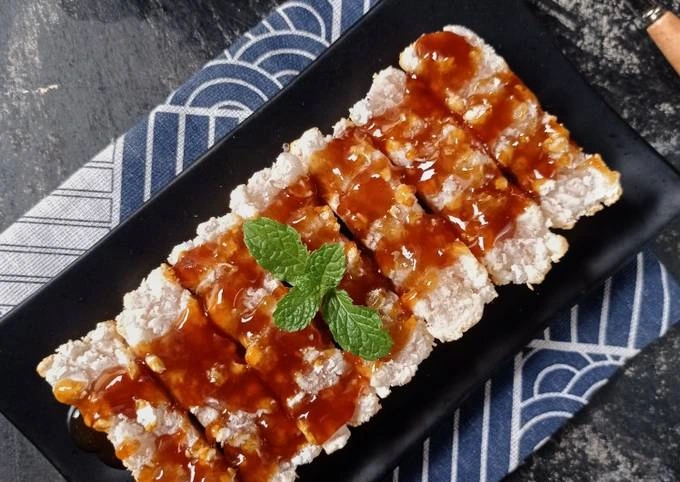
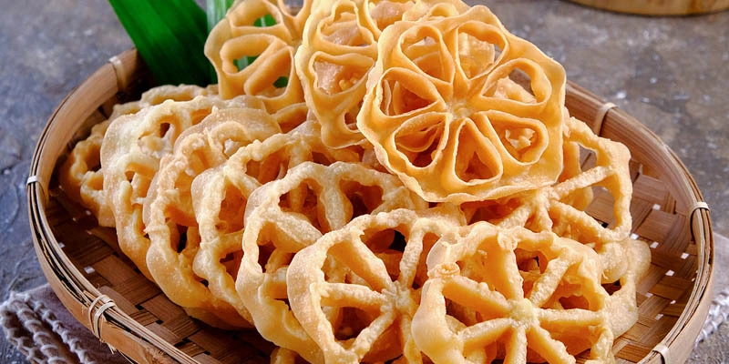
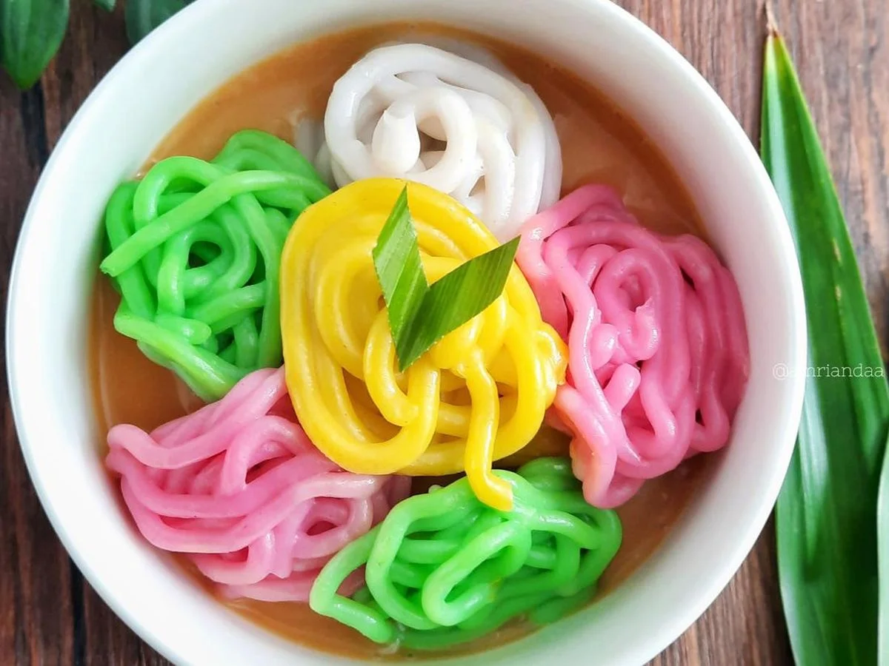
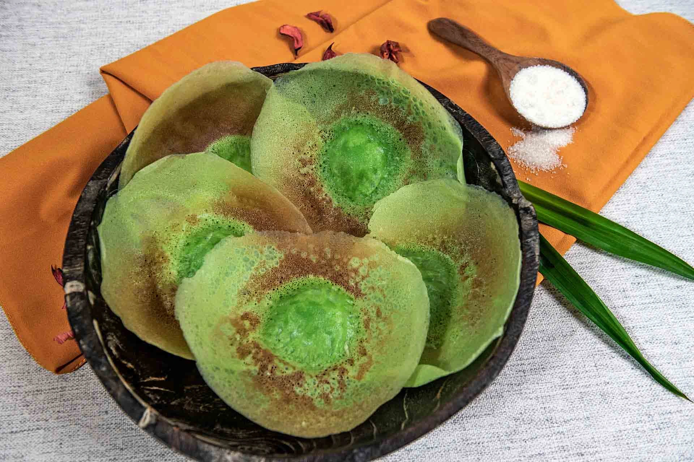
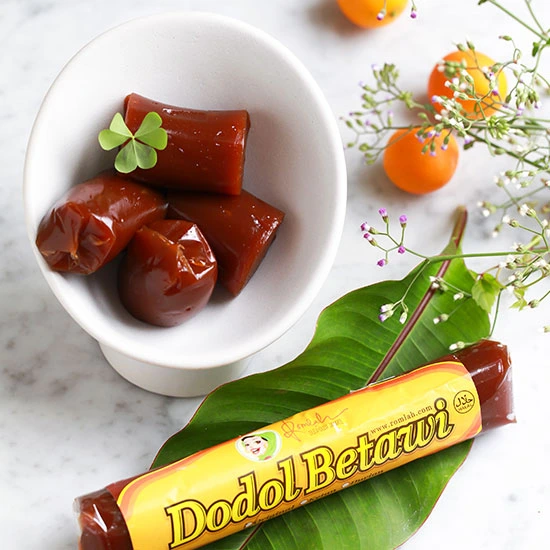
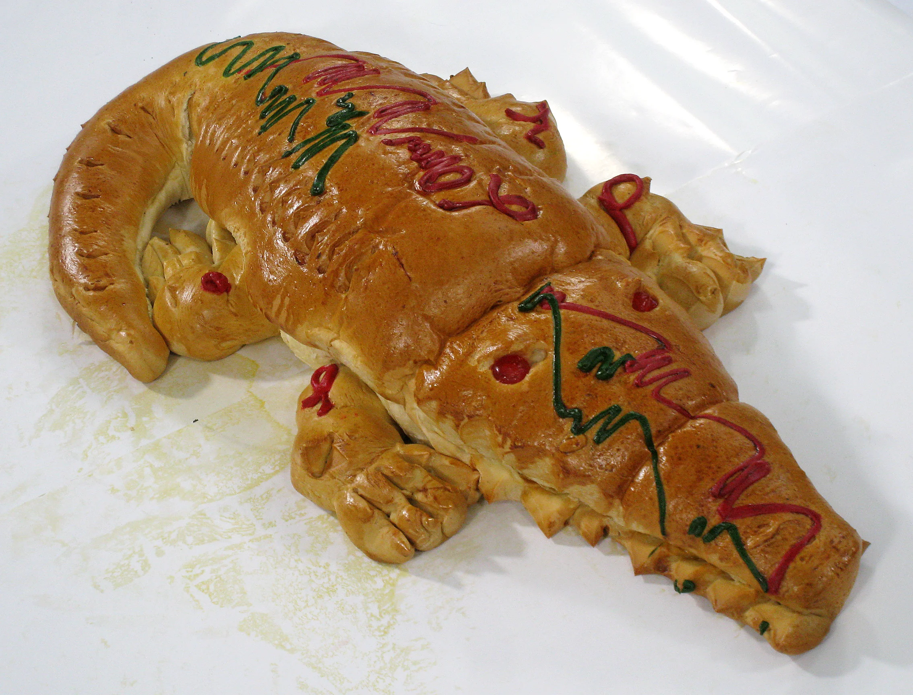

Kue-Kue Betawi
| No. | Nama Kue | Penjelasan |
|---|---|---|
| 1. | Kue Cucur  | Kue cucur adalah jajanan khas Indonesia yang berasal dari wilayah barat pulau Jawa. Kue ini terbuat dari tepung beras dan gula jawa atau gula aren yang digoreng. Kue Cucur memiliki bentuk yang cenderung tebal menggembung seperti gunung di bagian tengah dan tipis di bagian pinggirannya. Dalam leluri suku Betawi, jajanan ini termasuk salah satu makanan adat yang kerap dihidangkan dalam upacara-upacara adat budaya Betawi. Secara umum, kue tradisional masyarakat Betawi ini dapat ditemui di pasar-pasar tradisional di seluruh daerah di Indonesia, khususnya di area Jabodetabek (Jakarta, Bogor, Depok, Tangerang, Bekasi) dan sekitarnya. |
| 2. | Kue Rangi  | Kue rangi, atau juga disebut sagu rangi, adalah salah satu kue tradisional Betawi. Kue ini terbuat dari campuran tepung kanji (orang Betawi biasa menyebutnya tepung sagu) dengan kelapa parut yang dipanggang dengan cetakan khusus di atas tungku kecil dan ditutup agar cepat matang. Kue rangi disajikan dengan olesan gula merah yang dikentalkan dengan sedikit tepung kanji. Untuk menambah selera dan wangi, gula merah dicampur dengan potongan nangka, nanas atau durian. Kue rangi dijajakan secara tradisional oleh pedagangan dengan berkeliling sambil mendorong gerobak. Biasanya pedagang akan berkeliling dari satu kampung ke kampung lainnya. Namun karena bergesernya zaman dan sedikit orang yang mengetahui kue rangi, keberadaan pedagang kue rangi mulai sulit dijumpai. |
| 3. | Kue Kembang Goyang  | Kue kembang goyang adalah salah satu kue tradisional khas Betawi. Nama kembang goyang berasal dari bentuknya yang menyerupai kelopak bunga atau kembang dan proses membuatnya sambil goyang atau joget untuk atraksi terhadap pembeli. Kembang goyang dibuat dari tepung beras. Seiring perkembangan, kue ini pun mengalami penambahan varian rasa. Beberapa tetes essens frambozen, essens pandan, dan biji wijen sebagai variasi rasa hingga penambahan warna membuat penampilan kembang goyang terlihat begitu menarik. Kue Kembang goyang menjadi suguhan khas masyarakat Betawi dan biasa disajikan pada saat hari raya Idulfitri dan acara-acara hajatan. |
| 4. | Putu Mayang  | Putu mayang adalah kue tradisional yang dibuat dari tepung kanji atau tepung beras yang berbentuk seperti mi, dengan campuran santan kelapa, dan disajikan dengan kinca atau gula jawa cair. Di Indonesia kue ini merupakan bagian dari seni kuliner Betawi. Akan tetapi, asal mula kue ini mungkin terkait dengan kue putu mayam yang berasal dari India Selatan. Kedua-duanya memiliki bentuk adonan tepung kanji atau tepung beras yang dicetak menyerupai gumpalan mi. Namun putu mayang Indonesia sedikit berbeda dibandingkan putu mayam India yang juga dapat ditemukan di Sri Lanka, Malaysia, dan Singapura. Gumpalan putu mayang Indonesia lebih menyatu dan tebal dengan ukuran gumpalan yang kecil, sementara putu mayam India memiliki helai seperti mi yang lebih halus dan ukuran yang lebih lebar. |
| 5. | Kue Ape  | Kue ape atau atau serabi Jakarta merupakan jajanan khas dari Jakarta, yang memiliki bentuk menyerupai pancake. Kue yang biasa dijajakan di jalan atau di depan sekolah ini dibuat dari tepung terigu yang dicampur dengan susu. Saat ini, Kue ape dijual dengan berbagai variasi warna dan taburan di atasnya (keju atau meses). |
| 6. | Dodol Betawi  | Dodol betawi adalah jenis dodol khas suku Betawi. Dodol betawi berwarna hitam kecoklatan dengan variasi rasa rasa yang lebih sedikit daripada dodol dari daerah lain. Rasa dodol betawi hanya terdiri dari ketan putih, ketan hitam dan durian. Proses pembuatan dodol betawi sangat rumit. Dodol betawi umumnya dibuat sebagai penganan khusus untuk pesta, bulan Ramadan, Idul Fitri atau Idul Adha. Terutama menjelang hari raya, dodol betawi laris terjual. Karena proses pembuatannya yang rumit, hanya sedikit orang-orang yang ahli membuat dodol betawi. Terdapat beberapa daerah di Jakarta dan sekitarnya yang masih memproduksi dodol betawi, terutama di komunitas-komunitas warga Betawi, seperti di Condet, Jakarta Timur, Bogor dan Bekasi. Selain warga Betawi, dodol betawi juga dibuat oleh komunitas Tionghoa. |
| 7. | Roti Buaya  | Roti buaya adalah hidangan Betawi berupa roti manis berbentuk buaya. Roti buaya senantiasa hadir dalam upacara pernikahan dan kenduri tradisional Betawi. Keutamaan roti buaya dalam acara seserahan adalah pada sifat buaya itu sendiri yang dalam kepercayaan masyarakat betawi bahwa buaya dianggap sebagai perlambang kesetiaan pasangan yang menikah untuk mengarungi bahtera rumah tangga hingga akhir hayat. |